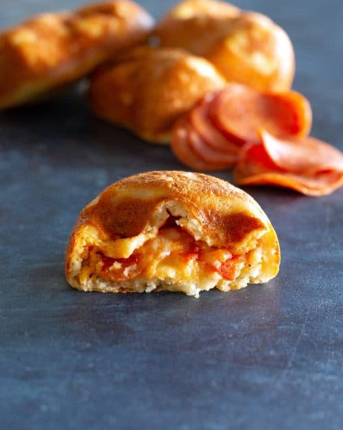

Keto Hot Pocket

Made from fat head dough and filled with pepperoni, cheese, and pizza sauce. This Keto meal is so satisfying!
What’s better than a flash back to your childhood. Hot pockets were a staple in my teenage years. This version is low-carb and still just as delicious.
Ingredients
- 1 1/2 cups mozzarella
- 2 tablespoons cream cheese
- 3/4 cup almond flour
- 1 teaspoon baking powder
- 1/2 teaspoon Italian seasoings
- 1/2 teaspoon garlic salt
- 1/4 cup marinara sauce
- 1 cup mozzarella cheese
- 25 pepperoni slices
Steps
- Preheat oven to 425 degrees F. In a microwave saft bowl, add the mozzarella cheese and cream cheese. Heat in 30 second intervals, stirring in between until fully melted.
- Add the almond flour, baking powder, Italian seasonings, and garlic salt. Stir until well combined.
- Roll out dough in between two parchment sheets to 1/4 inch roughly (about 10x14 inch rectangle). Cut into four equal parts.
- Brush half of each rectangle with about 1 tablespoon of marinara sauce, top with about 1/4 cup mozzarella cheese and top with about 5 pepperoni.
- Fold over and press edges together. Bake for 12-15 minutes or until golden brown.